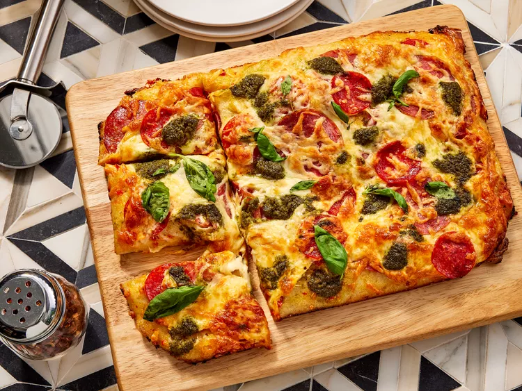

Home
Easy Pan Pizza

Description
There's nothing better than an easy meal that uses a store-bought shortcut—except for one that also tastes gourmet to boot. This pan pizza recipe highlights ready-made dough, a flavorful sauce, and customizable toppings—all from Trader Joe's—for an unforgettable dish even more delicious than takeout. No wonder everyone on the internet is "Tokking" about it.
You can grab everything for this pan pizza recipe right at your local TJ's, or pick up dupes at your go-to grocery store. We have step-by-step instructions to get you ready for dinnertime magic, complete with crispy edges and a gooey center.
Ingredients
- 1 pound fresh pizza dough, thawed
- cooking spray
- 5 tablespoons Trader Joe’s Garlic Spread-Dip
- 1 tablespoon Trader Joe’s Italian Bomba Hot Pepper Sauce, or as needed
- 2 ounces sliced Calabrese salami, divided
- 1 1/2 ounces pepperoni, divided
- 6 ounces low-moisture part-skim mozzarella cheese, shredded, divided
- 3 tablespoons Trader Joe’s Pesto Genovese
- 1/4 cup loosely packed fresh basil leaves
Steps
- Gather all ingredients.
- Remove pizza dough from refrigerator 20 minutes before making pizza. Preheat the oven to 450 degrees F (230 degrees C).
- Spray a metal 9x13-inch baking pan with cooking spray. Place pizza dough in baking pan and stretch to reach corners. If dough is hard to stretch and springs back, place a clean kitchen towel over baking pan and let dough relax for 10 minutes until pliable enough to stretch.
- Spread Garlic Spread-Dip evenly over dough, edge to edge, with a spoon or small offset spatula. Dollop with Bomba Hot Pepper Sauce, and spread evenly over Garlic Spread-Dip.
- Place 1/2 of the salami and 1/2 of the pepperoni over the sauces; sprinkle with 3/4 cup mozzarella. Top with remaining salami and pepperoni. Sprinkle with remaining mozzarella cheese.
- With a small spoon, dollop pesto, about 1/2 teaspoon at a time, over pizza.
- Bake in the preheated oven until dough has puffed, is golden brown around edges and bottom, and cheese has melted, 15 to 20 minutes, rotating pan back to front halfway through.
- Using a large spatula, remove from the oven and carefully transfer to a cutting board. Sprinkle with basil leaves, slice, and serve!